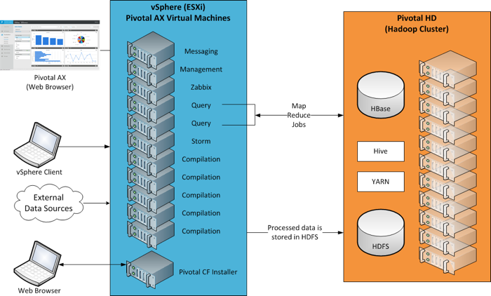
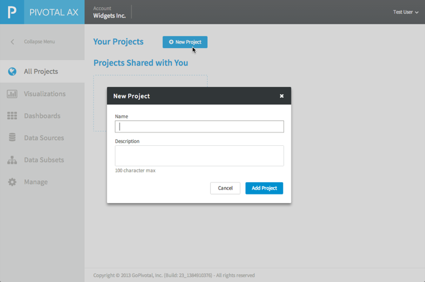
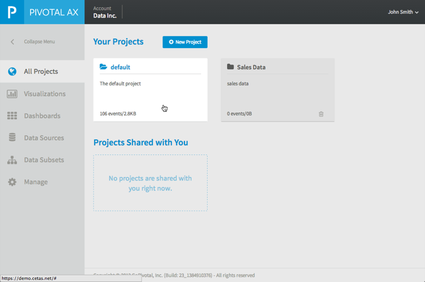
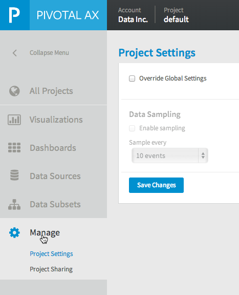

<!doctype html>
<html>
<head>
  <meta charset="utf-8">

  <!-- Always force latest IE rendering engine or request Chrome Frame -->
  <meta content="IE=edge,chrome=1" http-equiv="X-UA-Compatible">

  <!-- Use title if it's in the page YAML frontmatter -->
  <title>Administration Guide | Pivotal CF Docs</title>

  <link href="../stylesheets/master.css" media="screen,print" rel="stylesheet" type="text/css" />
  <link href="../stylesheets/breadcrumbs.css" media="screen,print" rel="stylesheet" type="text/css" />
  <link href="../stylesheets/search.css" media="screen,print" rel="stylesheet" type="text/css" />
  <link href="../stylesheets/portal-style.css" media="screen,print" rel="stylesheet" type="text/css" />
  <link href="../stylesheets/printable.css" media="print" rel="stylesheet" type="text/css" />

  <script src="../javascripts/all.js" type="text/javascript"></script>
  <link href='/images/favicon.ico' rel='shortcut icon'>

</head>

<body class="pivotalax pivotalax_AdministrationGuide">
<div class='wrap'>
  <script src="//use.typekit.net/clb0qji.js" type="text/javascript"></script>
  <script type="text/javascript">
      try {
          Typekit.load();
      } catch (e) {
      }
  </script>
  <script type="text/javascript">
      document.domain = "gopivotal.com";
  </script>
  <header class="navbar desktop-only" id="nav">
    <div class="navbar-inner">
        <div class="container-fluid">
            <div class="pivotal-logo--container">
                <a class="pivotal-logo" href="http://gopivotal.com"><span></span></a>
            </div>

            <ul class="nav pull-right">
                <li class="navbar-link">
                    <a href="http://www.gopivotal.com/paas" id="paas-nav-link">PaaS</a>
                </li>
                <li class="navbar-link">
                    <a href="http://www.gopivotal.com/big-data" id="big-data-nav-link">BIG DATA</a>
                </li>
                <li class="navbar-link">
                    <a href="http://www.gopivotal.com/agile" id="agile-nav-link">AGILE</a>
                </li>
                <li class="navbar-link">
                    <a href="http://www.gopivotal.com/oss" id="oss-nav-link">OSS</a>
                </li>
                <li class="nav-search">
                    <a href="http://www.gopivotal.com/search-pivotal"><span></span></a>
                </li>
            </ul>
        </div>
        <a href="http://www.gopivotal.com/contact">
            
        </a>
    </div>
  </header>
  <div class="main-wrap">
    <div class="container-fluid">
      <div class="container">
        <div id="sub-nav" class="nav-container desktop-only">
          <ul class="menu">
            <li class="first expanded js-maintopic"><a id='home-nav-link' href="/pivotalax/index.html">Home</a></li>
        		<li class="first expanded js-maintopic"><a href="/pivotalax/PivotalAXVersion1_0.html">Overview of Pivotal Analytics</a></li>
        		<li class="first expanded js-maintopic"><a href="/pivotalax/InstallationGuide.html">Installation Guide</a></li>
        		<li class="first expanded js-maintopic"><a href="/pivotalax/SystemRequirementsandSizingGuidelines.html">System Requirements and Sizing</a></li>
        		<li class="first expanded js-maintopic"><a href="/pivotalax/AdministrationGuide.html">Administration Guide</a></li>
        		<li class="first expanded js-maintopic"><a href="/pivotalax/DataSourceManagementGuide.html">Data Source Management Guide</a></li>
        		<li class="first expanded js-maintopic"><a href="/pivotalax/DataVisualizationGuide.html">Data Visualization Guide</a></li>
        		<li class="first expanded js-maintopic"><a href="/pivotalax/DataIngestionAPIs.html">Data Ingestion APIs</a></li>
          </ul>
        </div><!--end of sub-nav-->
        <div class="body-container content">

          <!-- Google CSE Search Box -->
          <script>
              (function() {
                  var cx = '005804290371689664731:n1ix15a_ysy';
                  var gcse = document.createElement('script');
                  gcse.type = 'text/javascript';
                  gcse.async = true;
                  gcse.src = (document.location.protocol == 'https:' ? 'https:' : 'http:') +
                          '//www.google.com/cse/cse.js?cx=' + cx;
                  var s = document.getElementsByTagName('script')[0];
                  s.parentNode.insertBefore(gcse, s);
              })();
          </script>
          <gcse:search></gcse:search>

          <ul class="breadcrumbs"><li><a href="./">Pivotal AX Version 1.0 Documentation</a></li> <li class="active"><span>Administration Guide</span></li></ul>

          <h3 class="title-container">Administration Guide</h3>

          


          <ul>
<li><p><a href="#sys-arch">System Architecture</a></p></li>
<li><p><a href="#global-settings">Global Settings</a></p></li>
<li><p><a href="#managing-projects">Managing Projects</a></p>

<ul>
<li>  <a href="#add-new-project">Add a new project</a></li>
<li>  <a href="#changing-project-settings">Changing Project Settings</a></li>
<li>  <a href="#sharing-projects">Sharing Projects</a></li>
<li>  <a href="#deleting-projects">Deleting Projects</a></li>
</ul></li>
<li><p><a href="#user-management">User Management</a></p>

<ul>
<li>  <a href="#new-user">Setting up a new user</a></li>
<li>  <a href="#managing-user-profile">Managing your user profile</a></li>
<li>  <a href="#changing-password">Changing your password</a></li>
<li>  <a href="#view-account-overview">View your Account Overview</a></li>
</ul></li>
<li><p><a href="#log-files">Log Files</a></p></li>
</ul>

<p>This section describes the architecture of a Pivotal AX installation and describes how to configure global settings, manage projects, manage users, and view log files.</p>

<h1><a id='sys-arch'></a>System Architecture</h1>

<p></p>

<h1><a id='global-settings'></a>Global Settings</h1>

<p>To configure global settings:</p>

<ol>
<li> Create a new user and log in to Pivotal AX. See <a href="LoggingintoPivotalAX.html">Logging in to Pivotal AX</a>.</li>
<li><p>Click the user name drop-down list in the upper-right corner and select <strong>Global Settings</strong>.</p>

<p></p></li>
<li><p>Configure the following settings that apply to all projects in your Pivotal AX application: <table border="1"><tbody><tr><th>Setting</th><th >Description</th></tr><tr><td>Data Sampling</td><td ><strong>Data sampling</strong> allows you to limit the number of events ingested by Pivotal AX for analysis. When you set this sampling interval, only events on the interval are processed. </p></li>
</ol>

<p>For example, set the <strong>Sample every</strong> drop-down list to
<strong>10 events</strong> to process only every 10th record of
your data. You can also choose intervals of 100, 1000, 5000, or
10000 events.</p>
<p>You can also override the global setting for Data Sampling for
each project. See <a href="#changing-project-settings">Changing
Project Settings</a>.</p></td></tr><tr><td class="confluenceTd">Data Search</td><td class="confluenceTd">Sets the period of time used for searching
data in <strong>Canvas View</strong> or <strong>Auto
Charts</strong> view. Only events within the specified time period are included in the search results. You can chose One Day, One Week, One Month, One Year, or All.</td>
</tr>
<tr>
<td class="confluenceTd">Status Notifications</td>
<td class="confluenceTd">
<p>Sets the type of notifications sent from Pivotal AX. Choose one
or both of the following:</p>
<ul>
<li><strong>By Email</strong> - Sends email
notifications to the email address defined in the profile.</li>
<li><strong>On Browser</strong> - Displays
notifications in the Web browser where Pivotal AX is running.</li>
</ul>
<p><strong>Note:</strong> To enable notification on Firefox
browser, enter <code><a href="http://aboutconfig" class=
"external-link" rel="nofollow">about:config</a></code> in the
browser address bar, set <code>network.websocket.allowInsecureFromHTTPS</code> to
<code>true</code> and save your changes.</p></td></tr></tbody></table></p>

<ol>
<li> Click <strong>Save Changes</strong>.</li>
</ol>

<h1><a id='managing-projects'></a>Managing Projects</h1>

<p>A project is a grouping of your data sources and data visualizations of that data. You can perform the following actions to manage your projects:</p>

<ul>
<li>  <a href="#add-new-project">Add a new project</a></li>
<li>  <a href="#changing-project-settings">Change project settings</a></li>
<li>  <a href="#sharing-project">Share a project</a></li>
</ul>

<h2><a id='add-new-project'></a>Add a new project</h2>

<p>To add a new project:</p>

<ol>
<li><p>Select <strong>All Projects</strong> in the left menu bar and click <strong>New Project</strong>.</p>

<p></p></li>
<li><p>Enter a name and description for your project.</p></li>
<li><p>Click <strong>Add Project</strong>.</p>

<p>Your new project is created.</p></li>
</ol>

<p>For information about adding data sources, see <a href="DataSourceManagementGuide.html">Data Source Management Guide</a>.</p>

<h2><a id='changing-project-settings'></a>Changing Project Settings</h2>

<p>To override the global setting for Data Sampling for a project:</p>

<ol>
<li><p>Select a project by selecting <strong>All Projects</strong> in the left navigation menu and clicking on a project name. </p>

<p></p></li>
<li><p>Click the <strong>Manage</strong> icon in the left navigation menu.</p></li>
<li><p>Click <strong>Project Settings</strong>.</p>

<p> </p></li>
<li><p>Select <strong>Override Global Settings</strong>.</p></li>
<li><p>Enable or disable sampling by checking or unchecking <strong>Enable sampling</strong>.</p></li>
<li><p>Set the number of events to sample using the <strong>Sample every</strong> drop-down list.</p></li>
<li><p>Click <strong>Save Changes</strong>.</p></li>
</ol>

<h2><a id='sharing-projects'></a>Sharing Projects</h2>

<p>You can share a project with other Pivotal AX users.</p>

<p>To share a project:</p>

<ol>
<li> Select a project by selecting <strong>All Projects</strong> in the left navigation menu and clicking on a project name. </li>
<li> Click the <strong>Manage</strong> icon from the left navigation menu and select <strong>Project Sharing</strong>. </li>
<li> Click <strong>Share This Project</strong>.</li>
<li> Enter the email addresses of the users with whom you want to share your project. Separate the addresses with commas.</li>
<li> (Optional) Enter the text of a message to include with the email that invites the users to share your project.</li>
<li> Click <strong>Send Invite</strong>.
The users receive an email inviting them to share your project and a list of project members displays.</li>
</ol>

<h2><a id='deleting-projects'></a>Deleting Projects</h2>

<p>To delete a project:</p>

<ol>
<li> Select <strong>Projects</strong> &gt; <strong>View All Projects</strong>
A box displays containing information about each project defined in your account.</li>
<li> Click the <strong>Trash</strong> icon in the box containing the project you want to delete. </li>
<li> Confirm the deletion.
The project is deleted.  </li>
</ol>

<h1><a id='user-management'></a>User Management</h1>

<p>You can perform the following actions to manage Pivotal AX users:</p>

<ul>
<li>  <a href="#new-user">Set up a new user</a></li>
<li>  <a href="#managing-user-profile">Modify your user profile</a></li>
<li>  <a href="#changing-password">Change your password</a></li>
<li>  <a href="#view-account-overview">View account overview</a></li>
</ul>

<h2><a id='new-user'></a>Setting up a new user</h2>

<p>To set up a new user account:</p>

<ol>
<li> In a Web browser, navigate to Pivotal AX.</li>
<li> Click the <strong>New User? Register</strong> link. </li>
<li><p>Enter the following user information:</p>

<ul>
<li>  The name of the business (optional)</li>
<li>  Email address of user</li>
<li>  Password</li>
<li>  First and Last Name </li>
<li>  Phone number</li>
<li>  City, State, and country</li>
</ul></li>
<li><p>Click the box to indicate that you agree with the User Agreement.</p></li>
<li><p>Click <strong>Submit</strong>.
 The user receives an email with instructions for setting up their account.</p></li>
</ol>

<h2><a id='managing-user-profile'></a>Managing your user profile</h2>

<p>To manage your user profile:</p>

<ol>
<li> Log in to Pivotal AX.</li>
<li> Click the user name drop-down list in the upper-right corner and select <strong>Profile</strong>.</li>
<li><p>Change any of the following fields:</p>

<ul>
<li>  First and Last Name </li>
<li>  Business name</li>
<li>  Phone number</li>
<li>  City, state, and Country</li>
</ul></li>
<li><p>Click <strong>Save Changes</strong>.</p></li>
</ol>

<h2><a id='changing-password'></a>Changing your password</h2>

<p>To change your password:</p>

<ol>
<li> Log in to Pivotal AX.</li>
<li> Click the user name drop-down list in the upper-right corner and select <strong>Password</strong>. </li>
<li> Enter your current password.</li>
<li> Enter the new password, and confirm the new password. </li>
<li> Click <strong>Save Changes</strong>.</li>
</ol>

<h2><a id='view-account-overview'></a>View your Account Overview</h2>

<p>You can view information about your projects such as the total amount of data processed, top projects, the number of events processed, and usage history.  </p>

<p>To view the Account Overview for your projects:</p>

<ol>
<li> Log in to Pivotal AX.</li>
<li> Click <strong>Account Overview</strong>.</li>
</ol>

<h1><a id="log-files"></a>Log Files</h1>

<p>Each of the Pivotal AX resources creates a log file that you can use to troubleshoot problems. </p>

<p>To access the Pivotal AX log files:</p>

<ol>
<li> Log in to the Pivotal CF Operations Manger Web application. (See <a href="LoggingintoPivotalAX.html">Logging in to Pivotal AX</a>.)</li>
<li> From the <strong>Product Dashboard</strong>, select <strong>Pivotal AX</strong>.
The Pivotal AX configuration displays.</li>
<li> Select the <strong>Status</strong> tab. </li>
<li> Click the <strong>Download Log</strong> button for the resources you are interested in.
The selected log files are archived into a zip file and downloaded to the Pivotal CF Operations Manger VM. </li>
<li> Select the <strong>Logs</strong> tab.
After the logs are downloaded to Pivotal CF Operations Manger, a link displays for each log file. Click the link to download the log files to your local computer. The logs are contained within a zip file.  </li>
</ol>


        </div><!-- end of body-container content-->
      </div><!-- end of container -->
    </div><!--end of container-fluid-->
  </div><!--end of main-wrap-->

  <div class="site-footer desktop-only">
      <div class="container-fluid">
          <div class="site-footer-links">
              <span class="version"><a href='/'>Pivotal Documentation</a></span>
              <span>&copy;
                  <script>
                      var d = new Date();
                      document.write(d.getFullYear());
                  </script>
                  <a href='http://gopivotal.com'>Pivotal Software</a> Inc. All Rights Reserved.
              </span>
          </div>
      </div>
  </div>

  <script type="text/javascript">
      (function() {
          var didInit = false;
          function initMunchkin() {
              if(didInit === false) {
                  didInit = true;
                  Munchkin.init('625-IUJ-009');
              }
          }
          var s = document.createElement('script');
          s.type = 'text/javascript';
          s.async = true;
          s.src = document.location.protocol + '//munchkin.marketo.net/munchkin.js';
          s.onreadystatechange = function() {
              if (this.readyState == 'complete' || this.readyState == 'loaded') {
                  initMunchkin();
              }
          };
          s.onload = initMunchkin;
          document.getElementsByTagName('head')[0].appendChild(s);
      })();
  </script>
  <script type="text/javascript">

    var _gaq = _gaq || [];
    _gaq.push(['_setAccount', 'UA-39702075-1']);
    _gaq.push(['_setDomainName', 'gopivotal.com']);
    _gaq.push(['_trackPageview']);

    (function() {
      var ga = document.createElement('script'); ga.type = 'text/javascript'; ga.async = true;
      ga.src = ('https:' == document.location.protocol ? 'https://ssl' : 'http://www') + '.google-analytics.com/ga.js';
      var s = document.getElementsByTagName('script')[0]; s.parentNode.insertBefore(ga, s);
    })();

  </script>
</body>
</html>
